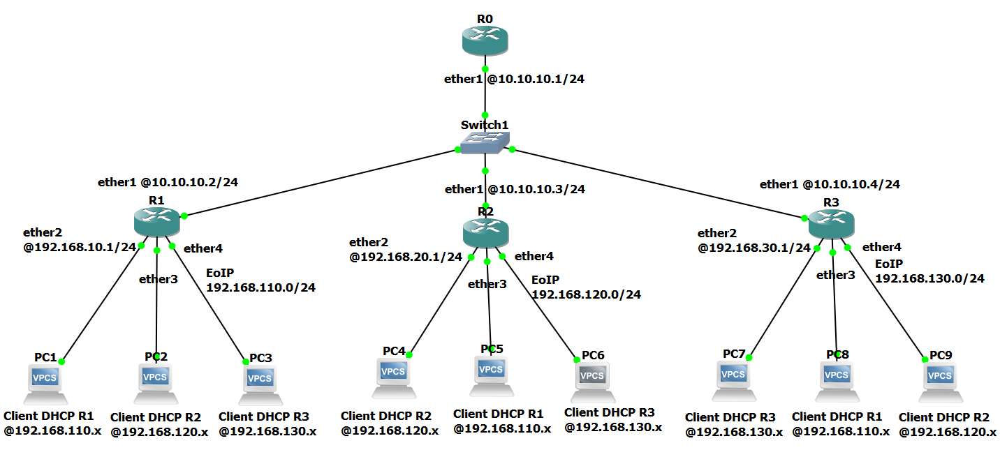
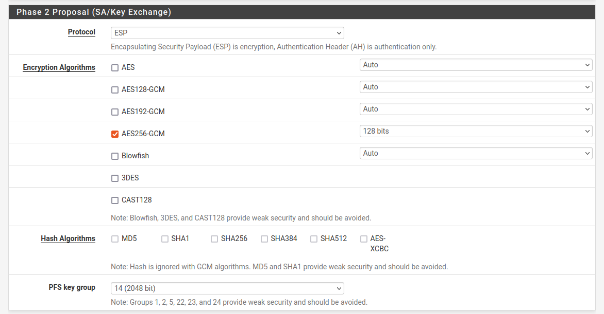

VPN IPsec site to site avec Pfsense
Dans ce chapître, nous verrons comment implémenter un tunnel VPN entre deux pfsense différents.
Si vous ne savez pas comment installer Pfsense, je vous invite à suivre le tuto sur Installation et configuration de Pfsense.
Pré-requis :
Pour réaliser notre projet, nous aurons besoin de :
- Deux routeurs Pfsense
- Deux postes clients
Topologie :
Voici le schéma de notre réseau :

Configuration IPsec :
Comme l'indique notre topologie et l'image suivant, voici ce qu'il en ai du Pfsense-1 :
- WAN : 10.0.2.4
- LAN : 192.168.1.1/24
Et pour le Pfsense-2 :
- WAN : 10.0.2.5/24
- LAN : 192.168.2.1/24
Sans plus tarder, pour commencer la configuration de notre IPsec nous derions nous rendre dans le menu VPN » IPsec
Une fois dans le menu, cliquez sur « + Add P1 »
Pour le Pfsense-1 :
Renseignez les champs suivants :
- Description : Connexion vers Site B
- Remote Gateway : 10.0.2.5
- Pre-shared Key : connexion-ipsec
- Encryption Algorithm : AES256-GCM
Le reste des paramètres laissez par défaut, puis n'oubliez pas de cliquer sur le bouton
De nouveau sur la page de menu IPsec, cliquez sur
Puis sur
Ici, renseignez les champs suivants :
- Description : LAN Site B
- Remote : Network
- Adress : 192.168.2.0
- Encryption Algorithm : AES256-GCM
- Automatically ping host : 192.168.2.1
Cliquez sur
La page du menu IPsec de notre Pfsense-1 ressemblera à ceci :
Cliquez sur
Pour le Pfsense-2 :
Passons maintenant au Pfsense-2. Renseignez les champs suivants :
- Description : Connexion vers Site A
- Remote Gateway : 10.0.2.4
- Pre-shared Key : connexion-ipsec
- Encryption Algorithm : AES256-GCM
Puis, n'oubliez pas de cliquer sur le bouton
De nouveau sur la page de menu IPsec, cliquez sur
Puis sur
Ici, renseignez les champs suivants :
- Description : LAN Site A
- Remote : Network
- Adress : 192.168.1.0
- Encryption Algorithm : AES256-GCM
- Automatically ping host : 192.168.1.1

Cliquez sur
La page du menu IPsec de notre Pfsense-2 ressemblera à ceci :
Vérification de la connexion :
Pour voir que notre IPsec fonctionne correctement, rendez-vous dans le menu Status » IPsec
Pfsense-1
Pfsense-2
Pour la vérification des logs IPsec, rendez-vous dans le menu Status » System Logs
Règles IPsec
La connexion IPsec est mis en place mais ce n'est pas encore fini car si vous tenter de faire les pings entre les deux ça ne marchera pas.
Pas de panique, il vous suffit simplement d'ajoutez une règle à notre firewell pour que tout fonctionne correctement.
Ceci étant dit, pour mettre en place la règle qui vont nous permettre de communiquer rendez-vous sur Firewall » Rules
Ensuite cliquez sur l'onglet « IPsec » puis sur le bouton « Add »
Pfsense-1
Cliquez sur
Pfsense-2
Cliquez sur
Pfsense-1 et Pfsense-2 :
Par défaut, la règle LAN qui se trouve ne pose aucun problème car elle autorise le passage de n'importe quel protocole depuis le réseau local (LAN) vers n'importe quel réseau.
Test Ping
Le PC1 en 192.168.1.2 réussi à pinger le PC2 en 192.168.2.2 et vice versa.
Lire le chapître suivant :
« Tunnel EoIP sur MikroTik CHR avec IPsec »